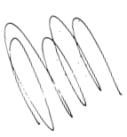

Portfólio
Full-Stack

Fabíola
Barcelos
Sobre mim
Olá!
Eu sou a Fabíola, sou brasileira e moro em Porto Alegre, no Rio Grande do Sul.
Desde 2015, sou formada em Ciências Biológicas pela Universidade Federal do Rio Grande do Sul (UFRGS). Atualmente, sou mestranda em Administração na linha de pesquisa de Inovação, Tecnologia e Sustentabilidade. Minha pesquisa (e trabalho) é com bancos comunitários construídos em comunidades da periferia de Porto Alegre. Bancos comunitários são iniciativas de moradores e ferramentas de transformação social - procure a respeito! É lindo!
Além do mestrado, sou aluna da Labenu no curso de Full-Stack que iniciou em janeiro de 2022 e terminará no início de 2023.
Este portfólio é meu primeiro projeto em HTML e CSS.
As demais habilidades técnicas desenvolvidas no curso você encontra na sessão abaixo!
Minha jornada na programação está só começando!
Habilidades Técnicas
- FRONT-END
- HTML
- CSS
- JAVASCRIPT
- REACT
- JEST
- BACK-END
- NODE
- TYPESCRIPT
- MYSQL
- AWS
- FIREBASE